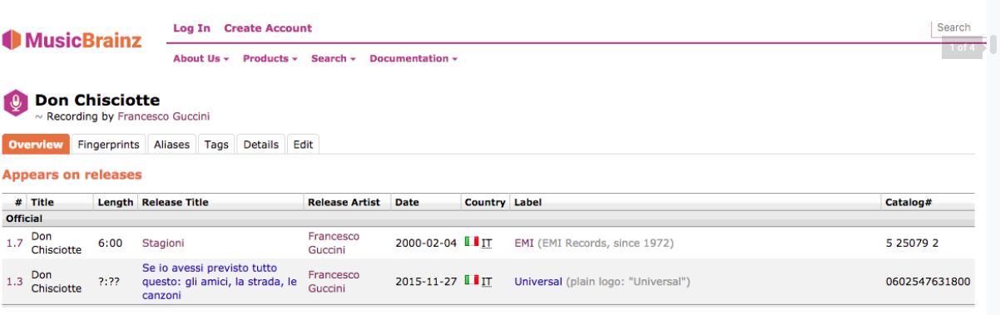
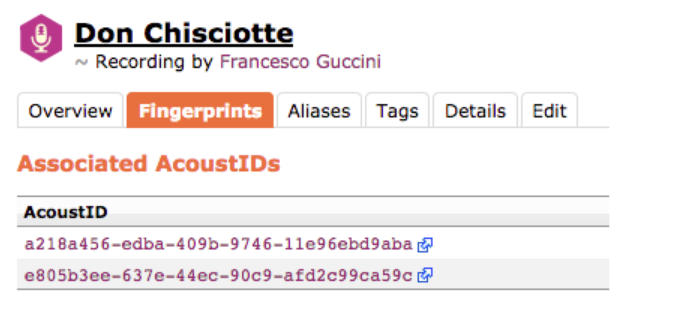

[SONG] Don Chisciotte, Francesco Guccini
Another important item which came to our mind when thinking about Don Quixote is the famous song written and sung by the Italian songwriter Francesco Guccini. The lyrics of this song is extremely rich and detailed, therefore this music could be used to express features related to both the main character of our project, i.e. Don Quixote, and the concept around which our idea develops, i.e. the journey for the justice which leads Don Quixote and his loyal and pragmatic companion Sancho Panza through incredible (dis)adventures.
Coming back to the song, we found useful and interesting metadata by examining the website “MusicBrainz”.
https://musicbrainz.org/recording/dbd11e86-b6aa-4ad7-8978-861911e50e6a
MusicBrainz is an open music encyclopedia which collects music metadata and makes them available to the public.
Like Wikipedia, MusicBrainz is maintained by a global community of users and everyone can participate and contribute.
By typing “Don Chisciotte” in the search bar, we found the information we were looking for.

There are two official recordings. The first one is taken from the album “Stagioni”, while the second one is taken from a CD which collects Guccini’s most famous songs, which is why some information which is marked with question marks cannot be derived.
By clicking on “Stagioni”, one is redirected to a list which includes all the songs that are part of the Album. The number “7” (i.e. 1.7) points out that “Don Chisciotte” is the seventh song of the album.

The fingerprint includes two links to AcoustID, a big database for audio fingerprints. Here we can find more data which are referred to the MusicBrainz metadata identifiers.

By clicking on Aliases (alternate name for an entity. They typically contain common misspellings or variations of the name and are also used to improve search results) and Tags we could not find any result.
Instead, interesting and useful information can be derived by the Details section.

Interestingly enough, we noticed that the MBID is included in the second line of the XML tree: Right after, we got more information concerning the title and the length of the song and more information about the songwriter who wrote this piece of music.
The original title given by Guccini is followed by the MBID (MusicBrainz Identifier), a 36 character Universally Unique Identifier that is permanently assigned to each entity in the database.
Successively, one can obtain the permalink, i.e. a URL which is intended to remain unchanged for many years into the future.
Metadata Standard
The metadata standard (from Wikipedia, “a metadata standard is intended to establish a common understanding of the meaning or semantics of the data, to ensure correct and proper use and interpretation of the data by its owners and users”) used by MusicBrainz is the MMD (MusicBrainz XML Metadata Format), which is an XML based document format to represent music metadata.
Indeed, the XML file which structures the metadata related to the song is available and can be read.
Interestingly enough, we noticed that the MBID is included in the second line of the XML tree:
Right after, we got more information concerning the title and the length of the song and more information about the songwriter who wrote this piece of music.

Further information can be viewed.
It concerns the release of the product and other data, therefore it is not related to the artist himself, but to the specific release that is possessed and used by MusicBrainz.
The whole XML schema that was written can be viewed here https://musicbrainz.org/ws/2/recording/dbd11e86-b6aa-4ad7-8978-861911e50e6a?inc=aliases%2Bartist-credits%2Breleases
Moreover, by clicking on AcousticBrainz entry one can get even additional information and data, including the link to the YouTube video of the song.


{kind=link}
{kind=link}
{kind=link}
{kind=link}
{kind=link}